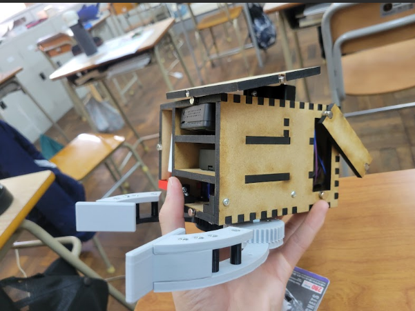

・堀川蓮斗
・大阪公立大学工業高等専門学校メカトロニクスコース4年
・将来的には電気関係の仕事に就きたい
・gmail: r20129@osaka-pct.ac.jp
cadの授業で作成したモーターとサーボを駆動するarduino uno用シールドです。kicadを用いて作成しました。全ての部品は
秋月電子にて揃えることができるように設計しました。
また小型化にもこだわりました。

三年生にて行った文化祭で製作した回路です。ラジコンを作る、というテーマで5人チームで製作に取り掛かりました。
この回路はマイコンの取り付け、電源、モーター駆動回路、サーボ駆動回路、電源電圧を監視するモニターを一つにまとめたものです。急な部品変更にも対応できるようにするためユニバーサル基板が使用されています。
三年生での実習にて行ったPLCです。ここではロッドの伸縮を制御するプログラムを書きました。
インターンシップ先でも一週間ほどPLCを触らせていただき、センサーから読み取られた情報をもとにモニターに現在の状況を示す、ということが出来るようになりました。
四年生での基礎研究という科目にて作成したハンドです。基礎研究では5人1チームでお寿司を作り手からお客様の
もとまで、どのように効率的に運ぶか？というテーマのもとなるべくコンパクトかつ、操作性が良くなるように3Dcadのcreoを使用し製作しました。

このハンドは主に回路部、機構部の二つに分けることが出来ます。レーザーカッターを使用し作成された部分は
回路ボックスとなっています。マイコン、モバイルバッテリー、サーボ、電池ボックスを格納できるように
設計しました。ハンドの操作性向上のため、写真のように磁石を用いた扉の開閉ギミックを搭載し内部の配線を容易にしました。